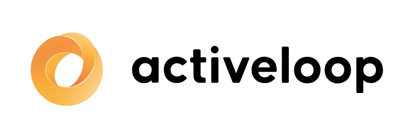

Explore more about my vision, mission, journey, and other aspects that define me as a professional.
Undergraduate
In 2020, I got accepted to the American University of Armenia where I spent four years pursuing my Bachelor of Science in Data Science degree.
The university is considered the best in Armenia providing the highest quality of education with North American standards.
I was not only equipped with technical knowledge but also developed important soft skills that have shaped who I am today.
One interesting fact about me is that I always face new challenges with full energy and solid preparation, ready to take on anything.
But once I realize things aren’t as tough as I expected, I tend to relax a bit too much. That’s what happened to me in my undergrad.
Eventually, I saw a slight decrease in productivity and performance in the middle of the program.
But when it comes to group assignments, I naturally take charge, feeling responsible for everyone and pushing the team forward rather than holding it back.
Thanks to that, I’ve never got less than a perfect grade on any group project.
Regarding my overall performance, at some point, I immediately regroup, refocus, and end up doing even better than before.
It’s a bit of a parabola-like performance, but at the end I always end up right at the top.
Achievements:
Got accepted to the university with SAT Math 800 and Toefl 94.
Landed three contract-based data scientist jobs offerred by three different university professors (two industry projects and one academic) as a result of my excellent performance, professionalism and clear communication skills.
Graduated with a cumulative grade point average of 3.7 out of 4.
Calculus (Single- and Multi-Variable)Discrete MathematicsProgramming for Data ScienceComputer VisionData Structures/Algorithms in Data ScienceProbabilityLinear Algebra and Ordinary Differential EquationsNumerical MethodsDatabases and Distributed SystemsStatisticsData VisualizationBusiness IntelligenceArtificial IntelligenceStatistics 2Machine LearningBayesian StatisticsMarketing AnalyticsBusiness AnalyticsTime Series Forecasting
First Job Experience
I always thought of summer breaks as great time to study independently, advance skills, learn something new.
It took two summer holidays to read the following two wonderful books and complete Deep Learning Specialization course by DeepLearning.AI.
Thanks to those efforts, I got my first Machine Learning Internship opportunity at CareAware.
My role as an intern
CareAware is a startup that builds its own products while also partnering with other companies on contract-based projects.
Initially, we worked on a demonstrative vision-based "fall detection" project, which was part of the product, as a team of three interns.
Although we were all interns, I was assigned as the lead of the team, guiding it and regularly communicating our progress to the company's more experienced members.
My role as a full-time engineer
After being an intern for about three months, I was offered a full-time position and began contributing to various projects.
Some partner projects were easier, while others were complex and had tight deadlines.
Team members who could contribute valuable knowledge and expertise were often reassigned to other projects to help enhance overall performance.
I was one of those team members. The dynamic environment gave me an opportunity to learn from different people, gain insight into their working styles and share with my experience with them as well.
Over the course of 9 months, I contributed to 6 different projects across 5 teams, working on a range of tasks in computer vision and time-series classification.
Overall, my first job at CareAware was a valuable experience where I gained lots of practical knowledge and grew quickly as a professional.
I also made good friends, built strong connections with the whole team and I believe we truly enjoyed working together.
Even after leaving the company, I am still in touch with my former team members and the CEO.
Achievements:
Used PyTorch library for network implementations, did architecture optimization, designed custom LSTM model that the result by 50%.
Worked on “kick detection for smart trunk opening” project for smart trunk opening, did visualizations, collected data and developed real-time data labeling techniques using OpenCV for faster and productive data labeling.
Was the lead of a small team working on an end-to-end demonstrative vision based "fall detection" project from scratch using OpenCV, PyTorch and other libraries.
Second Job Experience
During the Spring 2023 semester, I took a Machine Learning course. At the end of the term, while submitting a paper-based quiz, professor asked about my availability outside of the class for a potential opportunity to join an industry project.
That's how I got my second job opportunity as a Machine Learning Engineer.
Job Description
It was a contract role with Yerevan State University & Philip Morris International R&D (Yerevan, Armenia).
Due to a signed Non-Disclosure Agreement (NDA), I am unable to share specific details about the project.
Working in a team of four, we developed an end-to-end machine learning project, completing several key milestones throughout the project duration:
Specific data collection approach
Data cleaning and preprocessing
Exploratory data analysis
Machine learning model development and training
Model evaluation and performance assessment
Detailed report writing and documentation
Achievements:
In Sep 2023, submitted two reports that were both accepted and were presented to PMI research center in Switzerland.
Capstone Project
In spring 2024 I worked on my capstone project. I was always interested in audio data and chose to explore music generation because it was something innovative and worth attention.
My brother, Karlos Muradyan, who lives in Vancouver, BC, Canada, agreed to supervise my work. Our initial research led us to MusicGen, Meta’s latest generative-audio model.
MusicGen is a text-to-music, music-to-music generational model that lives inside the AudioCraft toolkit.
Audiocraft is a single code base that lets you generate music, create sound effects, and handle audio compression all in one place.
To give my project a clear goal, we focused on fine-tuning MusicGen so it could learn to create Armenian music.
Prompt 1
A sad and melancholic play on duduk. An Armenian instrumental music that evokes relaxation, calmness accompanied by sorrow and uncheerfulness. It makes the listener think about life, fall into deep contemplation and reevaluate the past, showing the old heritage of Armenia.
Original Composition:
Generated Composition:
Prompt 2
A music that has the following genres: Armenian folk, Armenian traditional music. The following Instruments: klarnet, percussion, synthesizer, drums, bass. The following Moods: happy, energetic, melodic.
Original Composition:
Generated Composition:
We not only figured out the complex code behind MusicGen but were able to adjust it to make it trainable on my GPU with 8 GB Memory.
However, there is a tradeoff between the optimized code and the ability to do token-level dropout during the training.
More you can read in our report here.
We received a final grade of 98.62 out of 100. After our Capstone projects were published on the official website of the American University of Armenia, the Head of Marketing at Activeloop reached out to propose a collaboration.
The idea was to modify the MusicGen code to integrate DeepLake for data storage and efficient access, and then document the step-by-step process of fine-tuning MusicGen using DeepLake in a blog post.

The blog was published on their official website here.
Graduate
In May 2024, I got my acceptence letter from the University of British Columbia to continue education as a Master of Data Science student.
UBC is consistently ranked among top 30 universities around the world and it's computer science department is one of the best in Canada and throughout the world.
Master of Data Science program at UBC is an accelerated program covering 24 different courses in just 8 months.
This means an extremely heavy workload and a highly compressed curriculum.
Over this period, students are expected to complete 36 exams and submit more than 120 homework assignments.
There were two major reasons behind my decision to pursue a master's degree.
First, to advance my skills, learn something new, get a higher degree and network with experienced professors.
Second, to fill the gaps in the fundamentals. During a bachelor's degree, it's often difficult to see the purpose of certain courses, such as probability, linear algebra or statistics.
Once I entered the job market and took more advanced courses, it became clear that a strong foundation is very important to understand more complex concepts.
As an international students I have faced several challenges that are important to acknowledge openly.
UBC has a large international student community, many of whom are highly motivated, having worked hard to earn a place at such a prestigious university.
This drive leads to intense completition, where students try to make the most of every opportunity.
In this environment, securing a part-time job while studying has become increasingly difficult, especially for international students, given the current job market situation and high level of competition.
Currently living in Canada, I am determined to push my limits, work as much hard as needed, regardless of whether I am in Armenia or Canada.
I am the kind of person who is ready to do much more than my personal comfort to be among the top.
Achievements:
Got accepted with a GRE Math Section score of 170 out of 170.
Achieved an average percentage score of 94.3 out of 100 in the graduate program.
My strong academic record in my previous university earned me two additional part-time, remote data science roles with three different professors, reflecting my reliability and capability as a student across the university.
Running a YouTube channel in parallel to the university studies and part-time work demonstrating strong planning and time management skills.
Computing Platforms for DSProgramming for DSProbability and StatisticsData Manipulation in RSupervised LearningAlgorithms and Data StructuresData Science WorkflowsDatabases and Data RetrievalStatistical InferencePrivacy, Ethics, and SecurityFeature Engineering and Model SelectionRegressionCollaborative Software DevelopmentData VisualizationCommunication and ArgumentationUnsupervised LearningBayesian StatisticsSpatial and Temporal ModelsWeb and Cloud ComputingAdvanced Machine LearningExperimentation and Causal InferenceCapstone